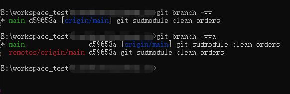
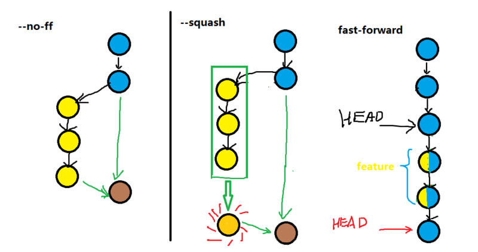
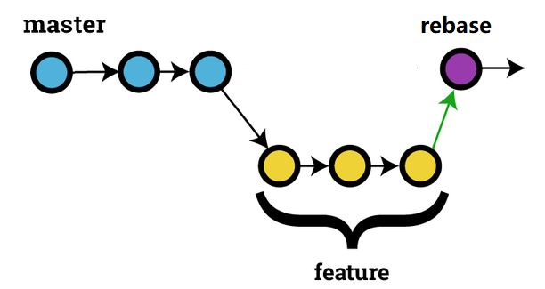
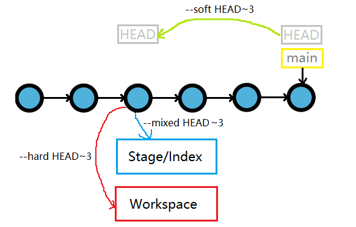
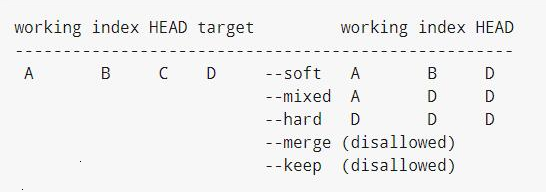
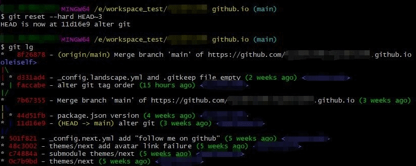
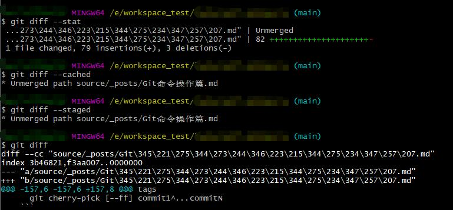
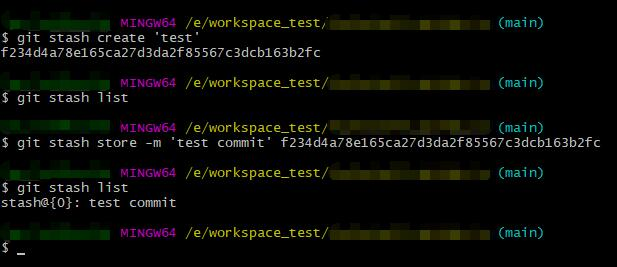

Git命令操作篇
操作篇
初始化仓库
1 | git init [project-name] |
克隆仓库
1 | git clone [url] |
分支
查看
a|all: 列出所有本地和关联远程分支
r: 列出关联远程分支
v|verbose: 列出分支并显示当前提交信息摘要
1
git branch [-a] [-r] [-v]
新建
1 | git branch <branch-name> |
移动|修改
m: 移动|修改分支, old-branch 无则为移动操作
M: 强制移动|修改分支即使新分支存在, old-branch 无则为移动操作
1
git branch [-m] [-M] [<old-branch>] <new-branch>
复制
c: 复制分支和分支提交历史
C: 强制复制分支和分支提交历史
1
git branch [-c] [-M] [<old-branch>] <new-branch>
删除
d: 删除本地分支,一般和 r 配合删除关联远程分支
D: 强制删除本地分支, 即使分支未被合并
1
git branch [-d] [-D] <branch-name>
切换
1 | git checkout [branch-name] |
切换并创建新分支
基于远程分支创建新分支,自动建立追踪关系
1 | git checkout -b <branch-name> [-t] [<remote-branch>] |
分支追踪关系
- t|no-track: 建立|取消分支追踪关系
- u|unset-upstream: 建立|取消分支追踪关系
当前分支和远程分支建立追踪关系
1 | git branch -t <remote-branch> |
指定分支和远程分支建立追踪关系
1 | git branch -u <local-branch> <remote-branch> |
分支追踪关系,提交摘要
1 | git branch [-vv] |

分支合并
merge
- fast-forward(ff): 快速合并, 不创建新的 commit, 原分支删除后提交记录消失, 默认方式
- no-ff: 不快速合并, 保留原有分支记录, 创建新的 commit
- squash: 合并一些不必要的 commit, 创建新的 commit
- stat: 合并结束后统计显示区别
- continue: 解决冲突后结束合并
- abort: 中断解决冲突结束合并
- quit: 放弃合并
1 | git merge [--no-ff] <branch-name> |

rebase
- i|interactive: 交互式操作
- continue: 解决冲突后结束合并
- abort: 中断解决冲突结束合并
- quit: 放弃合并
- skip: 重启合并跳过当前的修改
1 | git rebase <branch-name> |

选择合并
选择一个或者多个 commit, 合并进当前分支, 手动 commit
1
git cherry-pick [--no-commit|-n] <commit-ish>
选择 commit 区间合并, 含尾不含头
1
git cherry-pick [--ff] commit1...commitN
选择 commit 区间合并, 包含头和尾
1
git cherry-pick [--ff] commit1^...commitN
文件操作
添加文件
- all|A|. 添加所有文件提交信息列表
- i|interactive: 交互式操作
- n|dry-run: 不执行任何操作, 只显示做什么
1 | git add [-A] [-i] [-n] [<file>...] |
撤销文件
撤销工作区文件的变更
1
git checkout -- [.|<file>...]
恢复上一个 commit 的所有文件到工作区
1
git checkout .
恢复指定 commit 的指定文件到工作区
1
git checkout [commit] [file]
提交
- a|all: git add -A 的缩写
- m|message: commit 的注释
- amend: 改写上一次 commit 的注释
1 | git commit [-am] [<file>...] |
版本变更
reset
mixed: 还原版本库和暂存区, 工作区保持不变, 默认方式
soft: 还原版本库, 暂存区和工作保持不变
hard: 还原版本库和暂存区和工作区
keep: 还原版本库和暂存区, 并更新工作区中的 commit 和 HEAD 之间不同的文件, 如果不同的文件本地有更改则中止
merge: 还原版本库和暂存区, 并更新工作区中的 commit 和 HEAD 之间不同的文件, 但保留暂存区和工作区中不同的文件(既有未添加的更改), 如果不同的文件有未暂存的更改则中止
1
2
3git reset 3f405f2
git reset --soft HEAD^
git reset --hard HEAD~3


reset 回退操作时只在当前分支的 commit 上操作, 跳过 merge 进来的 commit

- 其他参数区别参见 git reset --help
revert
撤销一个或多个 commit, 并手动提交 commit
1 | git revert [--no-commit|-n] [<commit-ish>...] |
标签
d|delete: 删除指定标签
l|list: 显示所有标签列表
show: 查看指定标签信息
1
2git tag [-l]
git show [<tag-name>]
创建 tag
1 | git tag [<tag-name>] [<commit>] |
提交 tag
1 | git push [<remote>] [<tag-name>] |
删除 tag
删除本地 tag
1
git tag [-d] [<tag-name>]
删除远程 tag
1
2git push [<remote>] [--delete] <tag-name>
git push [<remote>] :refs/tags/<tag-name>
比较
stat: 统计不同数量
cached: 比较暂存区和指定 commit 的差异
staged: 比较暂存区和版本库的差异
check: 列出找到可能的空白错误
path: 指定 commit 之间的文件的差异
1
git diff [<commit>] [<commit>] [--] [<path>]
工作区和版本库的差异
1 | git diff HEAD |
暂存区和工作区的差异
1 | git diff |
暂存区和版本库的差异
1 | git diff [--staged] |
暂存区和指定 commit 的差异
1 | git diff [--cached] [<commit>] |

暂存
保存当前工作区的状态以备以后继续使用并恢复干净的工作区
- list: 显示暂存区暂存记录
- show: 显示暂存区最新的记录和当前工作区的不同
- pop: 取出指定的 stash 还原到工作区中并从暂存区中移除
- apply: 取出指定的 stash 还原到工作区不从暂存区移除
- clear: 清空暂存区
- drop: 从暂存区移除指定的 stash
- create: 基于当前工作区状态创建一个 stash 对象并返回 commit
- store: 使用返回的 commit 生成 stash 记录
1 | git stash |

日志
查看文件状态
1 | git status |
历史记录
all: 显示所有分支历史记录
stat: 统计每个 commit 的差异数量
follow: 显示指定文件的历史记录
summary: 显示每个 commit 的具体操作
p: 显示每个 commit 文件的修改详情
graph: 图形化显示历史记录
oneline: 每条历史记录独占一行
1
2
3
4git log [<remote>]
git log --stat
git log -p [<commit>] [<file>]
git log [commit[..commit]]
远程同步
pull 拉取远程分支信息并执行合并
1 | git pull [<remote>] [<remote-branch-name>[:<local-branch-name>]] |
all: 获取远程所有分支
1
git pull [--all]
stat: 统计合并后的差异
1
git pull [--stat] [<remote>] [<remote-branch-name>[:<local-branch-name>]]
no-ff: 不执行快速合并
1
git pull [--no-ff] [<remote>] [<remote-branch-name>[:<local-branch-name>]]
t|tags: 获取远程的 tags, 默认
1
git pull [-t] [<remote>] [<remote-branch-name>[:<local-branch-name>]]
no-tags: 不拉取远程的 tags
1
git pull [--no-tags] [<remote>] [<remote-branch-name>[:<local-branch-name>]]
set-upstream: 建立追踪关系
1
git pull [--set-upstream] [<remote>] [<remote-branch-name>[:<local-branch-name>]]
fetch 拉取远程分支信息
all: 获取所有远程分支
1
git fetch [-all]
t|tags: 获取远程的 tags, 默认
1
git fetch [-t] [<remote>] [<remote-branch-name>]
no-tags: 不拉取远程的 tags
1
git pull [--no-tags] [<remote>] [<remote-branch-name>]
push 推送本地分支信息到远程
1 | git push [<remote>] [<local-branch-name>[:<remote-branch-nam>]] |
all: 推送所有的分支
1
git push [--all]
f|force: 强制推送分支信息
1
git push [-f] [<remote>] [<local-branch-name>[:<remote-branch-nam>]]
d|delete: 删除远程分支
1
2git push [-d] [<remote>] [<remote-branch-name>]
git push [<remote>] [:[<remote_branch_name>]]tags: 推送标签信息
1
2
3git push [<remote>] [<tag-name>]
git push [<remote>] [--tags]
git push [<remote>] :refs/tags/[<tag-name>]u|set-upstream: 建立分支追踪
1
git push [-u] [<remote>] [<remote-branch-name>]